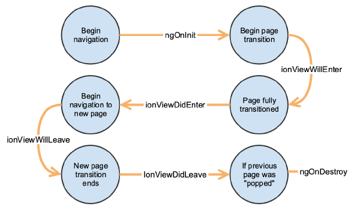

Installer NodeJS (vous pouvez prendre la dernière LTS, à titre informatif j'ai cette version sur mon PC : v12.14.0)
Installer npm > ouvrez une ligne de commande :
npm install -g npm
npm install -g @ionic/cli
Créer une nouvelle application :
ionic init "nom_de_votre_appli" --type=angular
Une CLI fait en général gagner beaucoup de temps à un développeur !
Vous allez pouvoir générer des nouvelles pages Angular à partir de la CLI pour votre application (plus besoin de créer les dossiers et les fichiers à la main) lien vers la doc
ionic generate page ma-nouvelle-page
Vous pouvez aussi démarrer votre serveur local pour tester vos devs depuis votre navigateur (en mode live reload) comme pour un site web quoi.
ionic serve
Ou bien la lancer sur votre téléphone local
ionic capacitor run android/ios
Je vous mets ici le lien vers toutes les commandes qui existent : CLI documentation
Vous pouvez retrouver ce schéma ainsi que les explications de chacun des évènements sur la doc officielle.
Votre application est composée de plusieurs pages/composants, étant basé sur une technologie web, ionic utilise le même routeur que celui qui est utilisé pour gérer un site web.
app-routing.module.ts (normalement placé à la racine de votre dossier)
const routes: Routes = [{
path: 'account' , // => Considérez le 'path' comme étant l'URL de la page de votre application
// Vous allez ensuite lui attacher un module via la ligne suivante :
loadChildren: () => import('./pages/account/account.module').then(m => m.AccountModule)
},
{
path: 'support',
loadChildren: () => import('./pages/support/support.module').then(m => m.SupportModule)
}];
# Si vous souhaitez changer de page depuis votre code, commencez par importer la classe Routerimport { Router } from '@angular/router';
# Injecter le ensuite dans votre classe en passant par son constructeurconstructor(
public router: Router,
) { }
# Il ne vous reste plus qu'à l'utiliser à l'endroit voulu pour naviguer entre vos pagesthis.router.navigateByUrl('/login');
Tout d'abord vous allez devoir ajouter à votre application le module Angular qui permet de faire des requêtes HTTP.
app.module.ts
import { HttpClientModule } from '@angular/common/http';
...@NgModule({
imports: [...,
HttpClientModule
],...
})
export class AppModule {}
Ensuite dans votre fichier typescript (page ou composant) :
import {HttpClient, HttpHeaders} from '@angular/common/http';
import { Observable } from 'rxjs'; #Utile pour gérer la partie asynchrone de la requête HTTP# Définition des headers génériques pour tous les appels
const httpOptions = {
headers: new HttpHeaders(
{ 'Content-Type': 'application/json'}
)};
# On ajoute le client HTTP dans le constructeurconstructor(
...,
public httpClient: HttpClient
) {}
# On peut ensuite utiliser le client pour récupérer nos objets.getItems() {
this.httpClient.get<Observable<object[]>>('https://my-url/items', httpOptions)
.subscribe(items => {
this.items = items;
});
}
ng add @angular/pwa
# Pour packager votre application en site web :
ionic build --prod
Une fois la commande de build passée, vous allez trouver un dossier www dans votre projet. Il ne vous reste plus qu'à héberger ce contenu sur un serveur web et d'accéder à la page si vous souhaitez profiter de votre appli en PWA depuis votre téléphone.
Il est possible que vous ayez besoin de faire des actions différentes selon la plateforme où est exécuté votre code.
Par exemple si vous avez une PWA mais que vous la distribuez également en application Android et iOS, vous allez surement vouloir stocker les données différement de la partie web soit en utilisant le stockage natif pour les applications téléphone soit en utilisant la base de données de votre navigateur ou un serveur distant pour la partie web.
Gardez quand même bien en tête que le but d'une application multiplateformes est de factoriser votre code, pas de faire du spécifique.